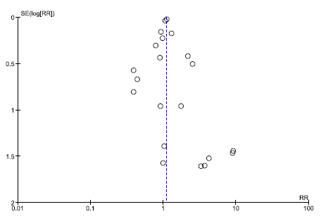
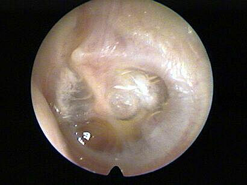
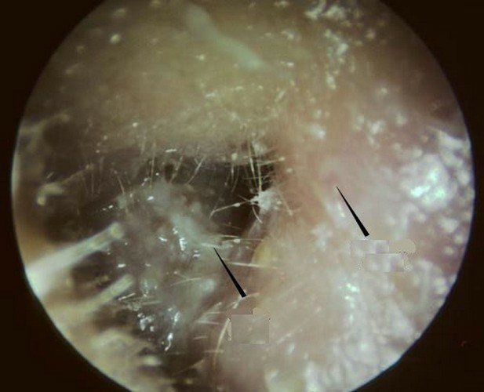
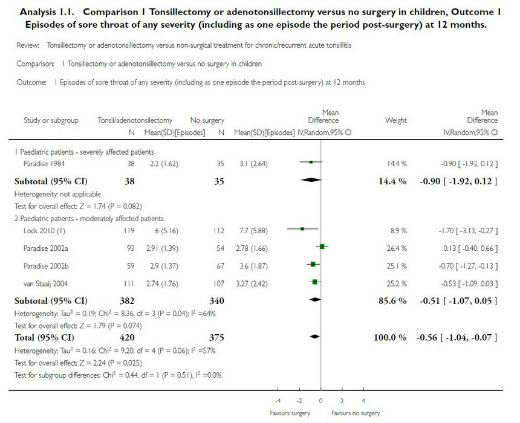

Menu
Arts en Patiënt 4Oefentoets Klinisch redeneren
Examen inleveren
Weet je zeker dat je het examen afsluit?
Examen resetten
Al je antwoorden worden gewist en je begint opnieuw. Weet je het zeker?
Jouw resultaten
Arts en Patiënt 4 · Oefentoets Klinisch redeneren
—
/ 40
0
Goed
0
Fout
0
Niet beantwoord
Vraag 1
Casus 1: keelpijn Een Turks-Nederlandse man van 18 jaar die sinds 6 jaar in Nederland woont, komt op het spreekuur van de huisarts. Hij heeft sinds twee dagen toenemend flinke keelpijn. Hij heeft 39.4 graden koorts. Hij heeft afgelopen twee dagen ziek in bed gelegen. Hij heeft minder eetlust. Hij drinkt normaal. Hij kan goed door zijn neus ademen, heeft geen aangezichtspijn en hoest niet. Bij inspectie doet hij zijn mond goed open en zie je links een gezwollen tonsil met wit beslag. De gehemeltebogen zijn symmetrisch. Hij heeft met name links meerdere licht vergrote pijnlijke voorste hals-lymfeklieren. Hij heeft een blanco voorgeschiedenis.
Vraag 1a — Welke bevindingen maken een peritonsillair abces minder waarschijnlijk? Noem twee bevindingen.
Modelantwoord
- Hij kan zijn mond goed openen (geen trismus)
- Er is geen asymmetrie bij keelinspectie (symmetrische gehemeltebogen)
Beiden goed is 1 punt.
Vraag 2
Vraag 2b — De KNO-arts overweegt, naast larynx-/stembandpathologie, een n. laryngeus recurrens parese als oorzaak van de klachten. Als deze parese de oorzaak is, waar bevindt zich dan bij deze man het meest waarschijnlijk de pathologie? Noem twee locaties.
Modelantwoord
- Linker longtop
- Oesophagus
- Schildklier
2 juiste antwoorden is 1 punt.
Vraag 3
Casus 5: verstopte neus Larissa is 19 jaar en komt bij de huisarts. Ze heeft sinds vier weken last van veel snotteren en een verstopte neus. Ze sprayt zoutoplossing maar dat helpt onvoldoende.
Vraag 5a — Welke aanvullende vragen helpen je het best om te differentiëren tussen een allergische rhinitis en een bovenste luchtweginfectie? Noem vier vragen.
Modelantwoord
- Jeukklachten van ogen en/of neus (pleit voor allergie)
- Aanwezigheid van koorts (pleit voor BLWI)
- De kleur van het snot (groen/geel pleit voor BLWI)
- Pijnklachten sinussen/keel (pleit voor BLWI)
- Seizoens- of situatiegebondenheid van de klachten (pleit voor allergie)
Drie vragen goed is 1 punt, vier vragen goed is 2 punten.
Vraag 4
Casus 1: keelpijn. Mohamed is 11 jaar en komt met zijn ouders op het spreekuur van de huisarts. Hij heeft al 4 dagen keelpijn en een vervelende blafhoest. Hij heeft ook al 3 dagen koorts, deze schommelt tussen de 38.1 en 39.5 graden. Slikken is sinds een dag erg pijnlijk geworden.
Waar let je specifiek op, naast dat wat in de casus is genoemd, om te bepalen of er sprake kan zijn van een peritonsillair abces? Noem drie items waar je op let.
Modelantwoord
Je let specifiek op:
- Of er moeite is met het geheel openen van de mond (trismus)
- Of er toenemende zwelling is van de voorste halslymfeklieren
- Of er aanzienlijke asymmetrie is bij keelinspectie (uvula naar lateraal verplaatst)
Drie items goed is 1 punt.
Vraag 5
Wat zijn op dit moment de meest relevante diagnoses waarmee je rekening moet houden op basis van waarschijnlijkheid en/of op basis van ernst? Noem 5 relevante diagnoses.
Modelantwoord
- Reinke oedeem
- Laryngitis/schimmelinfectie op basis van inhalatiemedicatie (corticosteroïden)
- Larynxcarcinoom
- Recurrensparese
- Gastrofaryngeale reflux
- Stembandknobbels (overbelasting stem)
Bovenste luchtweginfectie is niet goed. Dit is namelijk onwaarschijnlijk omdat de heesheidklachten al 3 maanden bestaan.
Drie diagnoses goed is ½ punt, 5 diagnoses goed is 1 punt.
Vraag 6
Casus 5: verstopte neus en koortsstuip. Yasmine is 1 jaar en is sinds een week erg aan het snotteren. Dikke groene snottebellen komen uit haar neus. Sinds vanochtend heeft ze koorts. De ouders bellen tegen 15.00 uur met de huisarts omdat Yasmine zojuist bewusteloos was en trekkingen had aan de armen en de benen. Dit duurde ongeveer 5 minuten. Daarna was ze nog ongeveer een half uur wat suffig. De ouders herkennen het beeld, want 2 maanden geleden had ze het ook al eens gehad.
Is er sprake van een atypische koortsstuip? Leg uit.
Modelantwoord
Er is géén sprake van een atypische koortsstuip. Tekenen van een atypische koortsstuip zijn:
- Leeftijd < 6 maanden of > 5 jaar
- Focale trekkingen
- Convulsie > 15 minuten
- Geen volledig herstel < 60 minuten
- Recidief tijdens dezelfde koortsperiode
Drie kenmerken goed is 1 punt. Juiste antwoord en 4 of meer kenmerken goed is 2 punten.
Vraag 7
Casus 1: koortsstuip. De ouders van Ronel Cohen, 4 jaar, bellen 's middags de huisartsenpraktijk. Vanochtend werd Ronel wakker met keelpijn en koorts (38.1 °C). Zojuist had hij gedurende een paar minuten een wegraking. Hij schokte wat met de armen en de benen. Op dit moment is hij weer bij bewustzijn, maar wel nog een beetje suf. Hij heeft dit nooit eerder gehad. De ouders zijn er erg van geschrokken.
Is dit een gewone koortsstuip of een atypische koortsstuip? Leg dit uit en geef 3 argumenten.
Modelantwoord
Dit is een gewone koortsstuip, want:
- Hij is niet jonger dan 6 maanden of ouder dan 5 jaar
- Er zijn anamnestisch geen aanwijzingen voor focale trekkingen
- De convulsie duurde niet langer dan 15 minuten
- Hij heeft vooralsnog geen recidief gehad in dezelfde koortsperiode
- Vooralsnog duurt de postictale sufheid niet > 60 minuten
Juiste antwoord + twee argumenten goed is ½ punt; drie argumenten goed is 1 punt.
Vraag 8
Casus 3: aanrijding. Mevrouw Zhang is in het centrum van Amsterdam op haar fiets aangereden en wordt door de ambulance naar de Eerste Hulp van een ziekenhuis gebracht. Ze heeft een EMV score van 6 (opent ogen niet, buigt abnormaal op pijnprikkel, kreunt).
Welke symptomen kun je bij inspectie zien die duiden op een laterale schedelbasisfractuur? Noem één symptoom.
Modelantwoord
Mogelijke juiste antwoorden:
- Liquorrhoe of vocht of bloed uit neus of oor (1 punt)
- Brilhematoom
- Hematoom retroauriculair
- Hematoom of laceraties gehoorgang
- Parese aangezichtsmusculatuur (facialisparese) is ½ punt, want is bij bewusteloze patiënt niet goed te zien.
Een juist antwoord is 1 punt (totaal 1 punt).
Vraag 9
Casus 5: hese man. Een man van 63 jaar komt bij de huisarts want hij heeft sinds twee maanden een hese stem. Hij hoest de laatste twee maanden vaker dan normaal. Hij heeft geen gewichtsverlies. Hij rookt een pakje per dag sinds zijn pubertijd.
Naar welke alarmsymptomen voor larynxcarcinoom moet de huisarts vragen? Noem er twee.
Modelantwoord
- Last van slikklachten
- Pijn uitstralend naar het oor
- Hemoptoe
2 juiste antwoorden is 1 punt.
Vraag 10
Casus 10 (vervolg). Figuur: funnel plot voor ernstige bijwerkingen.
Wat kun je afleiden uit deze funnelplot?

Modelantwoord
Juiste antwoord:
- Dat er mogelijk (waarschijnlijk) sprake is van publicatiebias. In andere woorden: kleinere studies onderin de figuur (grotere SE=Standard Error) laten gemiddeld een hogere Risk Ratio zien op een serious adverse event, dan de grotere studies bovenin de figuur. Dat duidt op mogelijk publicatiebias, in die zin dat kleinere studies met géén serious adverse events niet gepubliceerd zijn.
Mohamed is 3½ jaar en wordt door zijn ouders de praktijk binnen gedragen. Zij komen rennend binnen en zijn in paniek. De moeder was Mohamed een schone broek aan het aantrekken toen hij plots een wegraking kreeg. Hij was niet aanspreekbaar, zijn ogen draaiden weg en hij schokte met benen en armen. Op dit moment komt hij weer bij. Hij reageert op aanspreken. De wegraking heeft nog geen 5 minuten geduurd.
Waarom is het op dit moment onwaarschijnlijk dat deze wegraking door epilepsie komt? Geef drie argumenten.
Modelantwoord
Dit is geen epilepsie, maar een gewone koortsstuip, want:
- Hij is niet jonger dan 6 maanden of ouder dan 5 jaar
- Er zijn anamnestisch geen aanwijzingen voor focale trekkingen
- De convulsie duurde niet langer dan 15 minuten
- Hij heeft vooralsnog geen recidief gehad in dezelfde koortsperiode
- Vooralsnog duurt de postictale sufheid niet > 60 minuten
Twee argumenten goed is ½ punt; drie argumenten goed is 1 punt.
Vraag 12
Vervolg casus: De huisarts denkt op basis van de anamnese dat Samuel een sinusitis heeft. De huisarts ziet bij lichamelijk onderzoek dat het rechteroog van Samuel rood is. Het oog is ook pijnlijk.
Welke sinus is waarschijnlijk ontstoken? Leg uit.
Modelantwoord
Voor toekenning van 1 punt noemt de student dat waarschijnlijk de sinus ethmoidalis ontstoken is, omdat deze dicht tegen de orbita aanligt en slechts door een dun laagje bot (de lamina papyracea) hiervan gescheiden wordt.
Juiste antwoord + goede uitleg is 1 punt.
Vraag 13
Casus 5: hese man – totaal 4 punten (vraag 15 t/m 18)
Een man van 65 jaar komt bij de KNO-arts omdat hij de laatste weken af en toe wat bloed hoest. Hij is niet hees. Hij heeft 50 packyears gerookt.
Wat zijn alarmsymptomen voor een larynxmaligniteit waar de huisarts naar moet vragen? Noem maximaal drie symptomen.
Modelantwoord
- Last van slikklachten
- Pijn uitstralend naar het oor
Een jongen van 6 jaar komt in mei bij de huisarts omdat hij druk voelt op zijn linker oor sinds een paar maanden. Bij otoscopie ziet de huisarts rechts een normaal trommelvlies, links ziet zij onderstaand beeld.
Wat is de meest waarschijnlijke diagnose? Noem er één.

Modelantwoord
- Otitis media met effusie
Juiste diagnose 1 punt.
Vraag 15
Vervolg casus: Na stadiering blijkt zij een FIGO stadium IV ovariumcarcinoom te hebben.
Hoe groot is de kans dat zij na 5 jaar nog in leven is?
Modelantwoord
- De 5-jaarsoverleving van een FIGO stadium IV carcinoom is 25%.
De student moet een percentage noemen dat in dezelfde orde van grootte ligt (15-35%).
Juiste antwoord is 1 punt.
Vraag 16
Zijn de Centor-criteria in deze casus relevant? Leg uit.
Modelantwoord
Nee, de Centor-criteria zijn hier niet relevant, want:
1. De Centor-criteria zijn er om te bepalen hoe groot de kans is op een infectie door een streptokok.
2. Bij een gezond iemand maakt het voor het beleid (en voor de prognose) niet uit of de infectie veroorzaakt wordt door een streptokok.
2 punten: 1 punt voor goed antwoord, 1 punt voor juiste uitleg.
Vraag 17
Mevrouw El S. is 53 jaar. Ze komt bij de huisarts omdat ze sinds een paar dagen wat bruine afscheiding vaginaal heeft. Ze is al twee jaar niet ongesteld geweest. De anamnese levert de volgende gegevens op:
BMI 35
Menarche 14 jaar
Ze heeft 6 kinderen. Van haar 35e tot haar 51e heeft ze de pil gebruikt (OAC).
Haar zus (55 jaar) heeft sinds twee jaar baarmoederkanker.
Er komt geen andere kanker in de familie voor.
Welke risicoverhogende factoren op baarmoederkanker zijn aanwezig? Leg uit waarom dit een risicofactor is.
Modelantwoord
Obesitas, vanwege omzetting van androsteendion naar oestron (ook goed: in vetweefsel wordt oestrogeen gevormd) waardoor constante niet-cyclische oestrogeenstimulatie.
Mogelijk familiair voorkomen van baarmoederkanker (in kader van HNPCC), hoewel minder waarschijnlijk want in de familie komt geen coloncarcinoom (of andere kankers) voor.
Vraag 5 — Bij otoscopie ziet de huisarts onderstaand beeld. Welke twee verschijnselen zie je die passen bij een otitis externa?

Modelantwoord
- Zwelling van de gehoorgang
- Afscheiding (debris/otorrhoe)
1 punt als beide verschijnselen genoemd.
Vraag 19
Vervolg casus 3.
Vraag 9 — Welke medicatie is nu geïndiceerd?
Modelantwoord
Eventueel xylometazoline en pijnstilling.
Bij juist antwoord 1 punt.
Vraag 20
Casus 5 – stemverandering (totaal 2 punten) Een vrouw van 54 jaar komt bij de KNO-arts omdat haar stem sinds enkele maanden donkerder en schor klinkt. Ze rookt een pakje sigaretten per dag sinds haar 16e. Ze is gezond en gebruikt geen medicijnen.
Vraag 12 — Is het waarschijnlijk dat er sprake is van Reinke oedeem? Leg uit.
Modelantwoord
Ja, Reinke oedeem is een veelvoorkomende oorzaak van deze klachten bij rokende oudere vrouwen.
Juist antwoord is 1 punt.
Vraag 21
Casus 6 – val uit klimrek (totaal 2 punten) Een jongen van 10 jaar wordt op de eerste hulp door de ambulance binnen gebracht. Hij is uit het klimrek plat op zijn gezicht gevallen. Hij heeft beiderzijds een orbita hematoom. Er druppelt een heldere vloeistof uit zijn neus.
Vraag 14 — Aan welke oorzaak van dit druppelen moet je in ieder geval denken?
Modelantwoord
Dit kan duiden op liquorrhoe en dat is een symptoom van een schedelbasisfractuur.
Juist antwoord is 1 punt.
Vraag 22
Vervolg casus 10.
Vraag 23 — Na voorlichting over hormonen besluit de patiënte toch van het gebruik af te zien. Een maand later komt ze terug op het spreekuur. Ze heeft na gemeenschap eenmalig een klein beetje vaginaal bloedverlies gehad. Wat is de differentiaal diagnose?
Modelantwoord
In ieder geval moeten in de DD staan:
- (pre)maligniteit cervix
- Uteruscarcinoom
En ook minimaal twee van onderstaande veelvoorkomende oorzaken:
- Poliep
- Chlamydia
- Myoom
- Vaginale afwijking (droog slijmvlies, oestrogeendeficiëntie)
Totaal 2 punten: maximaal twee punten, bij gemiste diagnose 1 punt aftrek.
Vraag 23
Vervolg casus 12.
Vraag 28 — Vind je, op basis van de gegevens in de tabel, tonsillectomie beter dan afwachten? Leg uit.

Modelantwoord
Na tonsillectomie hebben patiënten in een jaar tijd iets minder episodes met keelpijn (om precies te zijn 0,56 episodes minder). Dit effect is statistisch significant, maar lijkt niet klinisch relevant.
Juiste uitleg en conclusie is 2 punten.
Vraag 24
Hieronder staan enkele diagnoses bij de klacht heesheid genoemd. Sleep de casus naar de juiste diagnose.
Sleep een optie naar de bijbehorende rij, of tik eerst op een kaart en dan op een rij.
Man 33 jaar, verkoopt vis op de markt.
Sleep hier naartoe
Vrouw 54 jaar, 35 packyears.
Sleep hier naartoe
Man 67 jaar, 50 packyears.
Sleep hier naartoe
Vrouw 33 jaar, gebruikt fluticason vanwege astma.
Sleep hier naartoe
Vrouw 33 jaar, recent geopereerd.
Sleep hier naartoe
Vraag 25
Mevrouw S. heeft een operatie gehad aan haar schildklier. Na de operatie blijkt zij hees te zijn.
Welke zenuw is waarschijnlijk aangedaan?
Vraag 26
Imaan is 8 jaar. Ze heeft 8 weken geleden een verkoudheid gehad. Sindsdien is ze hees. De klachten zijn nog steeds niet over.
Wat is de meest waarschijnlijke oorzaak?
Vraag 27
Een arts geeft aan een patiënt met een neusbloeding de instructie om de neus dicht te knijpen op beide neusvleugels. Op welke structuur wordt dan druk uitgeoefend?
Vraag 28
Men doet onderzoek naar een nieuwe screeningstest voor prostaatkanker. Men vindt dat patiënten die gescreend zijn, de ziekte langer hebben, maar uiteindelijk gemiddeld genomen toch niet langer leven.
Door welke bias kan deze bevinding veroorzaakt zijn? (1 punt)
Modelantwoord
1 punt voor lead time bias.
Vraag 29
Jasmijn is 1 jaar oud. Haar moeder komt met haar op het spreekuur van de huisarts. Sinds een dag is ze veel aan het huilen. Ze had vanochtend 39 graden koorts. Bij onderzoek van het oor ziet de huisarts een rood bomberend trommelvlies.
Wat is de meest waarschijnlijke diagnose?
Vraag 30
Een fors-rokende barvrouw van 29 jaar komt bij de KNO-arts omdat ze sinds drie maanden een hese stem heeft. Ze heeft geen andere klachten. Bij laryngoscopie ziet de KNO-arts een afwijking van de stembanden.
Wat is op basis van deze gegevens de meest waarschijnlijke diagnose?
Modelantwoord
De meest waarschijnlijke diagnose is stembandknobbeltjes. Stembandknobbeltjes is op deze leeftijd bij stembelasting de meest voorkomende oorzaak van heesheid. Infecties zijn gezien het ontbreken van andere klachten onwaarschijnlijk. Reinke-oedeem of een maligniteit is gezien haar leeftijd onwaarschijnlijk. Stembandpoliep is ook een goed antwoord, maar komt minder vaak voor.
Stembandknobbeltjes = 1 punt. Stembandpoliep = ½ punt.
Vraag 31
Kies de juiste alternatieven.
Van welke preventie is hier sprake? Een patiënt heeft een hoge bloeddruk en slikt simvastatine: . Een patiënt krijgt anticoagulantia na een doorgemaakte TIA: .
Vraag 32
Yassin is twee jaar. Hij heeft sinds een week een snotneus en een hoest. Hij heeft veel gehuild en weinig gegeten en gedronken. De temperatuur schommelde rond de 38 graden. De ouders komen nu op het spreekuur van de huisarts omdat afscheiding uit het linker oor loopt. Opvallend is dat Yassin vandaag niet meer gehuild heeft.
Wat is de meest waarschijnlijke diagnose?
Vraag 33
Men onderzoekt het beloop van idiopathische facialisparese en vergelijkt een groep patiënten die prednison gebruiken met een groep patiënten die geen prednison gebruiken. Het onderzoek is dubbelblind en gerandomiseerd. Het blijkt dat patiënten die prednison gebruiken gemiddeld 6 weken eerder compleet hersteld zijn dan patiënten zonder medicatie (RR 2,32; 95%-BI 1,88-3,04).
Is hier sprake van een causale relatie? Leg uit.
Modelantwoord
Op basis van deze gegevens lijkt er inderdaad een causale relatie te zijn tussen prednisongebruik en een sneller herstel. Belangrijk argument voor causaliteit is dat het hier gaat om een RCT.
Causale relatie: ½ punt. Argument (RCT): ½ punt.
Vraag 34
Kies de juiste alternatieven.
Wat ziet u bij een ernstige perifere facialis parese? Kies telkens de goede bevinding. (1) ; (2) ; (3) ; (4) .
Vraag 35
Stel er zijn vier tests met de volgende eigenschappen. Test A: negatieve LR 0,9 en positieve LR 4,5. Test B: negatieve LR 0,5 en positieve LR 7,3. Test C: negatieve LR 0,3 en positieve LR 3,2. Test D: negatieve LR 0,8 en positieve LR 8,3. Een arts wilt een ziekte minder waarschijnlijk maken bij een patiënt met een pretestkans van 0,1 op deze ziekte.
Welke test kan de arts het beste inzetten?
Vraag 36
Casus: Elisa Bij de huisarts komt Elisa. Zij is negen maanden oud en heeft het syndroom van Down. Ze is niet eerder ziek geweest. Haar voorgeschiedenis vermeldt een koemelkallergie. Zij is sinds een week verkouden. Ze moet hoesten en is snotterig. Daarnaast heeft ze sinds twee dagen koorts met een maximum van 39.5 graden. Ze huilt veel, maar minder als ze paracetamol heeft gekregen. Bij het lichamelijk onderzoek constateert de huisarts een otitis media acuta links.
Wat is in bovenstaande casus de belangrijkste reden om te starten met een antibioticum?
Modelantwoord
Het syndroom van Down.
Juist antwoord is 1 punt.
Vraag 37
Wat zie je bij een patiënt met een ernstige Bellse parese? Selecteer het juiste antwoord.
Kies de juiste alternatieven.
De patiënt: ; .
Vraag 38
Casus: Kees Op je spreekuur als huisarts komt Kees. Hij is 22 jaar oud. Hij is twee weken geleden met vrienden op wintersport geweest. Daar heeft hij enkele dagen koorts gehad en moest hij hoesten en had hij keelpijn. De koorts is weg, maar hij blijft hoesten en is hees.
Wat is de meest waarschijnlijke oorzaak van zijn heesheid?
Vraag 39
Stel er zijn vier tests met de volgende eigenschappen: Test A: negatieve LR 0,1 en positieve LR 9,0 Test B: negatieve LR 0,3 en positieve LR 7,0 Test C: negatieve LR 0,5 en positieve LR 5,0 Test D: negatieve LR 0,9 en positieve LR 3,0 Een arts wil een ziekte minder waarschijnlijk maken bij een patiënt met een pretestkans van 0,3 op deze ziekte. Welke test kan de arts het beste inzetten?
Vraag 40
Hoe zouden wetenschappers binnen hun vakgebied reageren op deze bevindingen (zie casus Lakatos) in de fase van ‘normaal wetenschap’?
Modelantwoord
Ze zullen de bevinding trachten te ‘normaliseren’ (toch binnen het huidige paradigma verklaren): door het te ontkennen, te wijten aan meetfouten, of met ‘hulphypothesen’ proberen te verklaren.